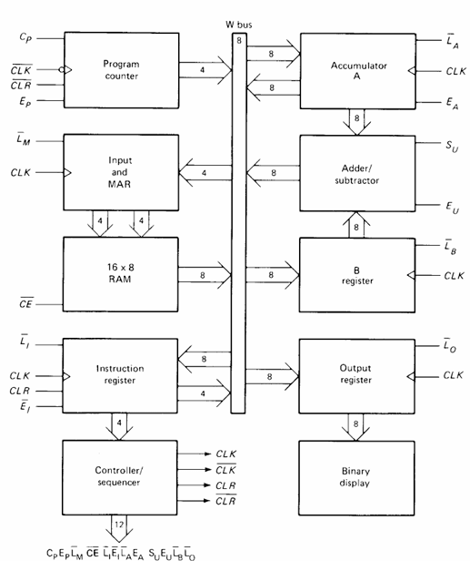
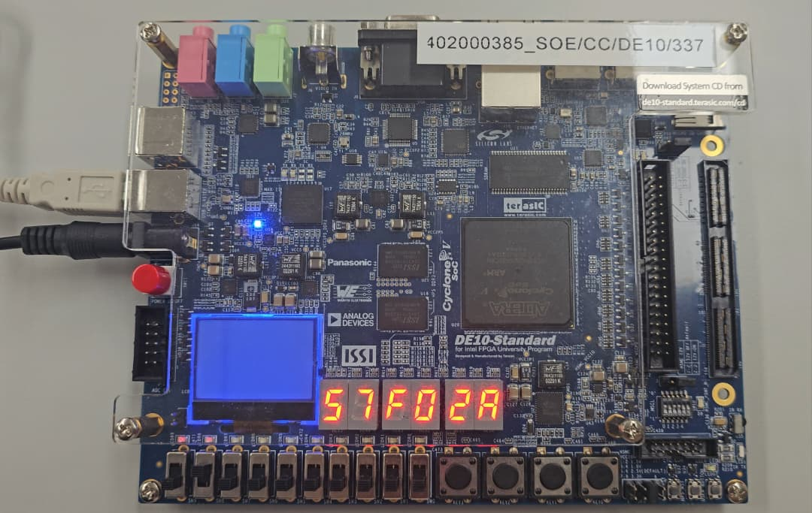
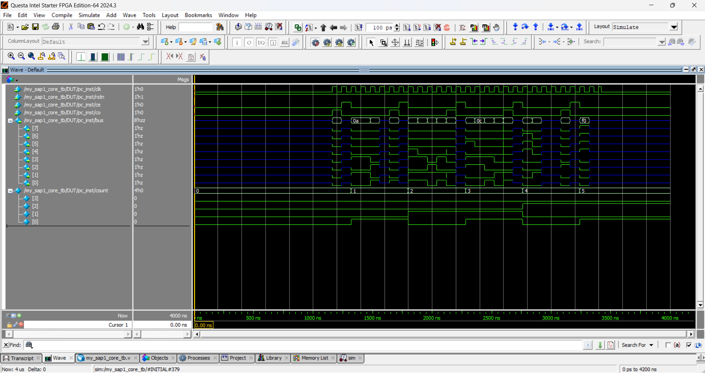
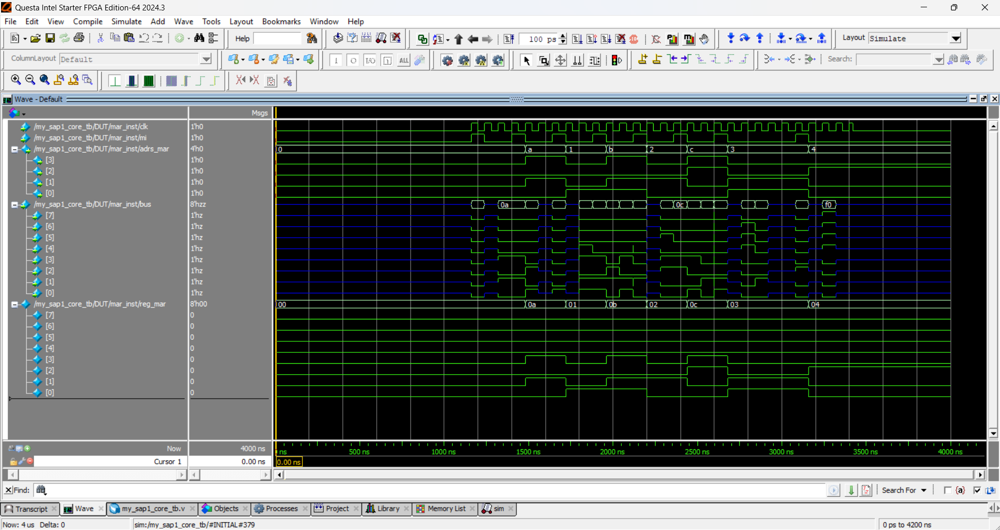
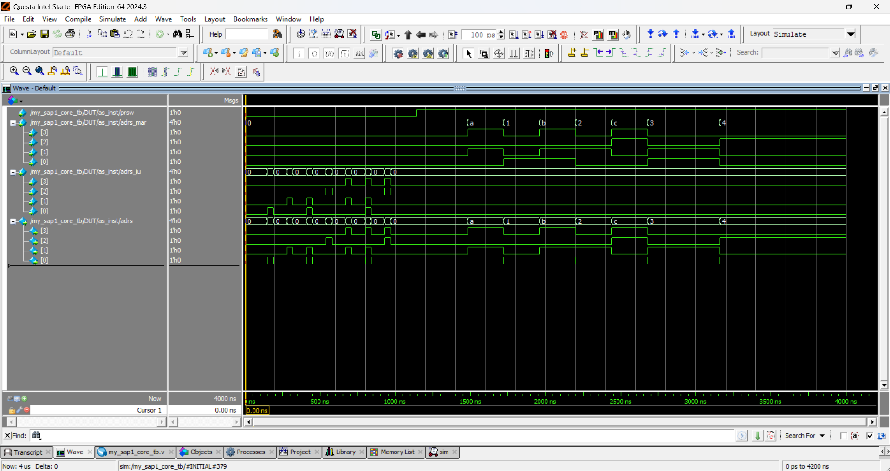
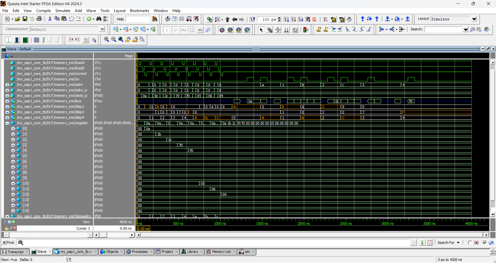
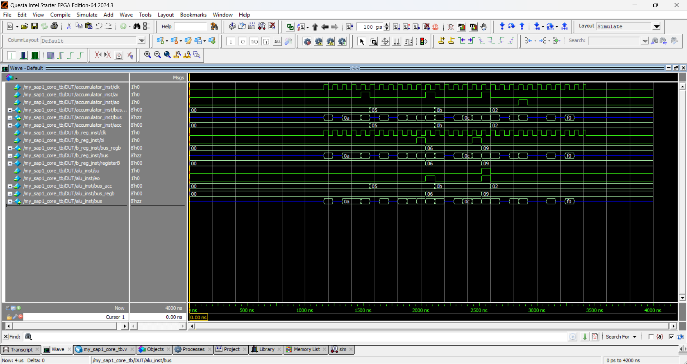
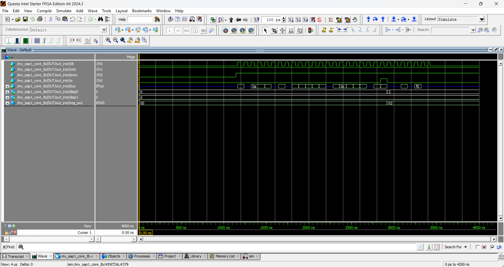
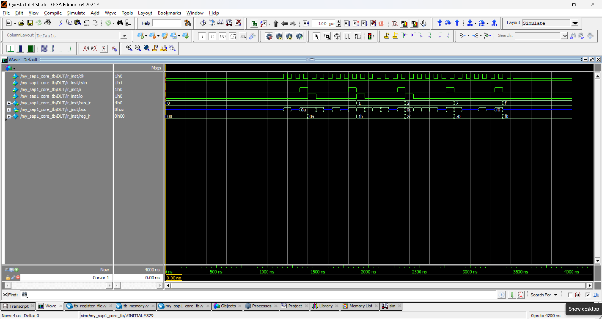
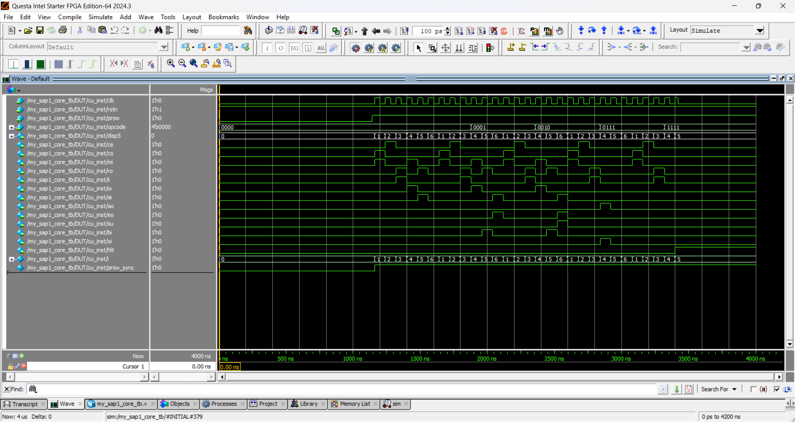

SAP-1 Computer
A re-creation of the popular SAP (Simple-As-Possible)-1, 8-bit computer architecture from the book Digital Computer Electronics by Albert P. Malvino & Jerald A. Brown, Third Edition.
Project Overview
The SAP-1 computer is an educational 8-bit architecture introduced by Albert Paul Malvino and Jerald A. Brown in 1977. Designed as a foundational entry point into computer microarchitecture, this project focuses on implementing the simplest functional CPU model. Rather than tackling complex processor designs without prior experience, SAP-1 provided a clear vision into the core hardware concepts, including register operations, bus arbitration, and direct addressing modes. Its clean layout enables straightforward modelling and visualization, from discrete logic level implementations up to structural RTL (Register-Transfer Level) abstractions.
Key Features & Implementation
- Signle-Bus Architecture: all registers communicate over a shared, bidirectional 8-bit W-bus.
- Hardwired Control Unit: 6-stage ring counter generating precise, hardwired control signals
- Five Fixed-Width Instructions: Only 5 basic instructions that are 8-bits each
System Architecture Description
- Program Counter (PC): 4-bit counter holding memory addresses (0000 to 1111).
- Memory Address Register (MAR): 4-bit register latching address lines for RAM indexing.
- Memory (RAM): 16 locations composed of 8-bits each
- Instruction Register (IR): 8-bit register split into 4-bit opcode and 4-bit operand
- Arithmetic & Logic Unit (ALU): 8-bit two's complement adder/subtractor.
- Controller-Sequencer: Hardwired unit outputting a 12-bit control word across 6 T-states per cycle.
Instructions and Their Description
| Mnemonic | Opcode (Binary) | Opcode (Hexadecimal) | Function | Description |
|---|---|---|---|---|
LDA |
0000 |
0 |
Load Accumulator | Loads data from a RAM address into the Accumulator. |
ADD |
0001 |
1 |
Add to Accumulator | Adds content of specified RAM address to Accumulator. |
SUB |
0010 |
2 |
Subtract from Accumulator | Subtracts content of RAM address from Accumulator. |
OUT |
0111 |
7 |
Output Register | Transfers accumulator contents to the output display. |
HLT |
1111 |
F |
Halt | Stops the computer clock/execution cycle. |
Code
/*
File: my_sap1_core.v
Module: My SAP-1 Core
*/
module my_sap1_core (
input wire clk_source,
input wire [3:0] PB,
input wire [9:0] SW,
inout wire [7:0] bus,
output wire [6:0] disp0,
output wire [6:0] disp1,
output wire [6:0] disp2,
output wire [6:0] disp3,
output wire [6:0] disp4,
output wire [6:0] disp5
);
wire start_stop;
wire rstn;
wire hlt;
wire commit;
wire loadA;
wire loadD;
wire [3:0] adrs_iu;
wire [7:0] data_iu;
wire prsw;
wire clk;
wire [3:0] bus_ir;
wire [3:0] adrs;
wire [3:0] adrs_mar;
wire [7:0] bus_acc;
wire [7:0] bus_regb;
wire ce, co, mi, ro, ii, io, ai, ao, eo, su, bi, oi;
assign start_stop = (~SW[9]) ? PB[0] : 1'b1;
assign rstn = (SW[9]) ? PB[0] : 1'b1;
assign commit = PB[2];
assign loadA = (~SW[9]) ? PB[3] : 1'b1;
assign loadD = (SW[9]) ? PB[3] : 1'b1;
assign adrs_iu = (~SW[9]) ? SW[3:0] : 4'b0000;
assign data_iu = (SW[9]) ? SW[7:0] : 8'b00000000;
assign prsw = SW[8];
// 0. Clock Divider
clock clock_inst (
.clk_source(clk_source),
.prsw(prsw),
.rstn(rstn),
.hlt(hlt),
.clk(clk)
);
// 1. PC (Program Counter)
pc pc_inst (
.bus(bus),
.clk(clk),
.rstn(rstn),
.ce(ce),
.co(co)
);
// 2. MAR (Memory Address Register)
mar mar_inst (
.bus(bus),
.clk(clk),
.mi(mi),
.adrs_mar(adrs_mar)
);
// 3. IU (Input Unit)
iu iu_inst (
.adrs_iu(adrs_iu),
.data_iu(data_iu)
);
// 4. AS (Address Selector)
as as_inst (
.prsw(prsw),
.adrs_mar(adrs_mar),
.adrs_iu(adrs_iu),
.adrs(adrs)
);
// 5. RAM (Random Access Memory)
memory memory_inst (
.bus(bus),
.SW(SW),
.loadA(loadA),
.loadD(loadD),
.commit(commit),
.adrs(adrs),
.adrs_iu(adrs_iu),
.data_iu(data_iu),
.disp2(disp2),
.disp3(disp3),
.disp4(disp4),
.ro(ro)
);
// 6. Accumulator
accumulator accumulator_inst (
.bus(bus),
.bus_acc(bus_acc),
.clk(clk),
.ai(ai),
.ao(ao)
);
// 7. B Register
b_reg b_reg_inst (
.bus(bus),
.bus_regb(bus_regb),
.clk(clk),
.bi(bi)
);
// 8. ALU (Arithmetic and Logic Unit)
alu alu_inst (
.bus(bus),
.bus_acc(bus_acc),
.bus_regb(bus_regb),
.su(su),
.eo(eo)
);
// 9. Output Unit & Register
out out_inst (
.bus(bus),
.clk(clk),
.rstn(rstn),
.prsw(prsw),
.disp0(disp0),
.disp1(disp1),
.oi(oi)
);
// 10. IR (Instruction Register)
ir ir_inst (
.bus(bus),
.bus_ir(bus_ir),
.clk(clk),
.rstn(rstn),
.ii(ii),
.io(io)
);
// 11. Control Unit
cu cu_inst (
.clk(clk),
.rstn(rstn),
.hlt(hlt),
.prsw(prsw),
.opcode(bus_ir),
.disp5(disp5),
.ce(ce),
.co(co),
.mi(mi),
.ro(ro),
.ii(ii),
.io(io),
.ai(ai),
.ao(ao),
.eo(eo),
.su(su),
.bi(bi),
.oi(oi)
);
endmodule/*
File: clock.v
Unit #0
Module: Clock Divider
*/
module clock #(
parameter COUNT_MAX = 25_000_000 - 1
)(
input wire clk_source,
input wire prsw,
input wire rstn,
input wire hlt,
output reg clk
);
reg [25:0] clk_50MHz;
initial begin
clk_50MHz = 26'd0;
clk = 1'b0;
end
always@(posedge clk_source or negedge rstn) begin
if (!rstn) begin
clk_50MHz <= 26'd0;
clk <= 1'b0;
end else if (hlt) begin
clk_50MHz <= 26'd0;
clk <= 1'b0;
end else if (prsw) begin
if (clk_50MHz >= COUNT_MAX) begin
clk_50MHz <= 26'd0;
clk <= ~clk;
end else begin
clk_50MHz <= clk_50MHz + 1'b1;
end
end
end
endmodule/*
File: pc.v
Unit #1
Module: Program Counter
*/
module pc (
input wire clk,
input wire rstn,
input wire ce,
input wire co,
output wire [7:0] bus
);
reg [3:0] count;
initial begin
count = 4'b0000;
end
always@(posedge clk or negedge rstn) begin
if (!rstn) begin
count <= 4'b0000;
end else if (ce) begin
if (count == 4'b1111) begin
count <= 4'b0000;
end else if (count <= 4'b1111) begin
count <= count + 4'b0001;
end
end
end
assign bus = (co) ? {4'b0000, count} : 8'bz;
endmodule/*
File: mar.v
Unit #2
Module: Memory Address Register (MAR)
*/
module mar (
input wire [7:0] bus,
input wire clk,
input wire mi,
output wire [3:0] adrs_mar
);
reg [7:0] reg_mar;
initial begin
reg_mar = 4'b0000;
end
always@(posedge clk) begin
if (mi) begin
reg_mar <= bus;
end
end
assign adrs_mar = reg_mar;
endmodule/*
File: as.v
Unit #4
Module: Address Selector (AS)
*/
module as (
input wire prsw,
input wire [3:0] adrs_mar,
input wire [3:0] adrs_iu,
output wire [3:0] adrs
);
assign adrs = (prsw) ? adrs_mar : adrs_iu;
endmodule/*
File: memory.v
Unit #5
Module: Random Access Memory (RAM)
*/
module memory (
input wire [9:0] SW,
input wire loadA,
input wire loadD,
input wire commit,
input wire ro,
input wire [3:0] adrs,
input wire [3:0] adrs_iu,
input wire [7:0] data_iu,
output wire [7:0] bus,
output reg [6:0] disp2,
output reg [6:0] disp3,
output reg [6:0] disp4
);
reg [7:0] register [0:15];
reg [3:0] tempadrs;
reg [7:0] tempdata;
integer i;
initial begin
for (i = 0; i < 16; i = i + 1) begin
register[i] = 8'h00;
end
tempadrs = 4'b0000;
tempdata = 8'b0000_0000;
end
always@(negedge loadA) begin
tempadrs[3:0] <= adrs_iu[3:0];
end
always@(negedge loadD) begin
tempdata[7:0] <= data_iu[7:0];
end
always@(negedge commit) begin
register[tempadrs[3:0]] <= tempdata[7:0];
end
assign bus = (ro) ? register[adrs] : 8'hz;
always@(*) begin
case (SW[8] ? register[adrs][3:0] : register[tempadrs][3:0])
4'b0000 : disp2 = 7'b1000000; // 0
4'b0001 : disp2 = 7'b1111001; // 1
4'b0010 : disp2 = 7'b0100100; // 2
4'b0011 : disp2 = 7'b0110000; // 3
4'b0100 : disp2 = 7'b0011001; // 4
4'b0101 : disp2 = 7'b0010010; // 5
4'b0110 : disp2 = 7'b0000010; // 6
4'b0111 : disp2 = 7'b1111000; // 7
4'b1000 : disp2 = 7'b0000000; // 8
4'b1001 : disp2 = 7'b0010000; // 9
4'b1010 : disp2 = 7'b0001000; // A
4'b1011 : disp2 = 7'b0000011; // b
4'b1100 : disp2 = 7'b1000110; // C
4'b1101 : disp2 = 7'b0100001; // d
4'b1110 : disp2 = 7'b0000110; // E
4'b1111 : disp2 = 7'b0001110; // F
default : disp2 = 7'b1111111; // All off if an error occurs
endcase
end
always@(*) begin
case (SW[8] ? register[adrs][7:4] : register[tempadrs][7:4])
4'b0000 : disp3 = 7'b1000000; // 0
4'b0001 : disp3 = 7'b1111001; // 1
4'b0010 : disp3 = 7'b0100100; // 2
4'b0011 : disp3 = 7'b0110000; // 3
4'b0100 : disp3 = 7'b0011001; // 4
4'b0101 : disp3 = 7'b0010010; // 5
4'b0110 : disp3 = 7'b0000010; // 6
4'b0111 : disp3 = 7'b1111000; // 7
4'b1000 : disp3 = 7'b0000000; // 8
4'b1001 : disp3 = 7'b0010000; // 9
4'b1010 : disp3 = 7'b0001000; // A
4'b1011 : disp3 = 7'b0000011; // b
4'b1100 : disp3 = 7'b1000110; // C
4'b1101 : disp3 = 7'b0100001; // d
4'b1110 : disp3 = 7'b0000110; // E
4'b1111 : disp3 = 7'b0001110; // F
default : disp3 = 7'b1111111; // All off if an error occurs
endcase
end
always@(*) begin
case (SW[8] ? adrs[3:0] : tempadrs[3:0])
4'b0000 : disp4 = 7'b1000000; // 0
4'b0001 : disp4 = 7'b1111001; // 1
4'b0010 : disp4 = 7'b0100100; // 2
4'b0011 : disp4 = 7'b0110000; // 3
4'b0100 : disp4 = 7'b0011001; // 4
4'b0101 : disp4 = 7'b0010010; // 5
4'b0110 : disp4 = 7'b0000010; // 6
4'b0111 : disp4 = 7'b1111000; // 7
4'b1000 : disp4 = 7'b0000000; // 8
4'b1001 : disp4 = 7'b0010000; // 9
4'b1010 : disp4 = 7'b0001000; // A
4'b1011 : disp4 = 7'b0000011; // b
4'b1100 : disp4 = 7'b1000110; // C
4'b1101 : disp4 = 7'b0100001; // d
4'b1110 : disp4 = 7'b0000110; // E
4'b1111 : disp4 = 7'b0001110; // F
default : disp4 = 7'b1111111; // All off if an error occurs
endcase
end
endmodule/*
File: accumulator.v
Unit #6
Module: Accumulator (A Register)
*/
module accumulator (
input wire clk,
input wire ai,
input wire ao,
inout wire [7:0] bus,
output wire [7:0] bus_acc
);
reg [7:0] acc;
initial begin
acc = 8'b0000_0000;
end
always@(posedge clk) begin
if (ai) begin
acc [7:0] <= bus [7:0];
end
end
assign bus = (ao) ? acc [7:0] : 8'bz;
assign bus_acc [7:0] = acc [7:0];
endmodule/*
File: b_reg.v
Unit #7
Module: B Register
*/
module b_reg (
input wire clk,
input wire bi,
input wire [7:0] bus,
output wire [7:0] bus_regb
);
reg [7:0] registerB;
initial begin
registerB = 8'b0000_0000;
end
always@(posedge clk) begin
if (bi) begin
registerB [7:0] <= bus [7:0];
end
end
assign bus_regb [7:0] = registerB [7:0];
endmodule/*
File: alu.v
Unit #8
Module: Arithmetic & Logic Unit
*/
module alu (
input wire su,
input wire eo,
input wire [7:0] bus_acc,
input wire [7:0] bus_regb,
output wire [7:0] bus
);
assign bus = (eo) ? ((su) ? (bus_acc[7:0] - bus_regb[7:0]) : (bus_acc[7:0] + bus_regb[7:0])) : 8'bz;
endmodule
/*
File: out.v
Unit #9
Module: Output Unit
*/
module out (
input wire [7:0] bus,
input wire clk,
input wire oi,
input wire rstn,
input wire prsw,
output reg [6:0] disp0,
output reg [6:0] disp1
);
reg [7:0] reg_out;
initial begin
reg_out = 8'b0000_0000;
end
always@(posedge clk or negedge rstn) begin
if (!rstn) begin
reg_out = 8'b0000_0000;
end else if (oi) begin
reg_out <= bus [7:0];
end
end
always@(*) begin
case (prsw ? reg_out[3:0] : 4'b0000)
4'b0000 : disp0 = 7'b1000000; // 0
4'b0001 : disp0 = 7'b1111001; // 1
4'b0010 : disp0 = 7'b0100100; // 2
4'b0011 : disp0 = 7'b0110000; // 3
4'b0100 : disp0 = 7'b0011001; // 4
4'b0101 : disp0 = 7'b0010010; // 5
4'b0110 : disp0 = 7'b0000010; // 6
4'b0111 : disp0 = 7'b1111000; // 7
4'b1000 : disp0 = 7'b0000000; // 8
4'b1001 : disp0 = 7'b0010000; // 9
4'b1010 : disp0 = 7'b0001000; // A
4'b1011 : disp0 = 7'b0000011; // b
4'b1100 : disp0 = 7'b1000110; // C
4'b1101 : disp0 = 7'b0100001; // d
4'b1110 : disp0 = 7'b0000110; // E
4'b1111 : disp0 = 7'b0001110; // F
default : disp0 = 7'b1111111; // All off if an error occurs
endcase
end
always@(*) begin
case (prsw ? reg_out[7:4] : 4'b0000)
4'b0000 : disp1 = 7'b1000000; // 0
4'b0001 : disp1 = 7'b1111001; // 1
4'b0010 : disp1 = 7'b0100100; // 2
4'b0011 : disp1 = 7'b0110000; // 3
4'b0100 : disp1 = 7'b0011001; // 4
4'b0101 : disp1 = 7'b0010010; // 5
4'b0110 : disp1 = 7'b0000010; // 6
4'b0111 : disp1 = 7'b1111000; // 7
4'b1000 : disp1 = 7'b0000000; // 8
4'b1001 : disp1 = 7'b0010000; // 9
4'b1010 : disp1 = 7'b0001000; // A
4'b1011 : disp1 = 7'b0000011; // b
4'b1100 : disp1 = 7'b1000110; // C
4'b1101 : disp1 = 7'b0100001; // d
4'b1110 : disp1 = 7'b0000110; // E
4'b1111 : disp1 = 7'b0001110; // F
default : disp1 = 7'b1111111; // All off if an error occurs
endcase
end
endmodule/*
File: ir.v
Unit #10
Module: Instruction Register
*/
module ir (
input wire clk,
input wire rstn,
input wire ii,
input wire io,
inout wire [7:0] bus,
output wire [3:0] bus_ir
);
reg [7:0] reg_ir;
initial begin
reg_ir = 8'b0000_0000;
end
always@(posedge clk or negedge rstn) begin
if (!rstn) begin
reg_ir = 8'b0000_0000;
end else if (ii) begin
reg_ir [7:0] <= bus [7:0];
end
end
assign bus = (io) ? reg_ir [3:0] : 8'bz;
assign bus_ir [3:0] = reg_ir [7:4];
endmodule/*
File: pc.v
Unit #1
Module: Program Counter
*/
module cu (
input wire clk,
input wire rstn,
input wire prsw,
input wire [3:0] opcode,
output reg [6:0] disp5,
output reg ce, co, mi, ro, ii, io, ai, ao, eo, su, bi, oi, hlt
);
reg [2:0] i;
reg prsw_sync;
initial begin
i = 3'd0;
hlt = 1'b0;
prsw_sync = 1'b0;
end
always @(posedge clk or negedge rstn) begin
prsw_sync <= prsw;
if (rstn == 0) begin
i <= 3'd0;
hlt <= 1'b0;
prsw_sync <= 1'b0;
end else if (prsw == 0) begin
i <= 3'd0;
hlt <= 1'b0;
end else if (hlt == 0) begin
if (i == 3'd6) begin
i <= 3'd1;
end else begin
i <= i + 3'd1;
end
if (i == 3'd4 && (opcode == 4'b1111 || opcode == 4'b1110)) begin
hlt <= 1'b1;
end
end
end
always @(*) begin
ce = 1'b0; co = 1'b0; mi = 1'b0; ro = 1'b0;
ii = 1'b0; io = 1'b0; ai = 1'b0; ao = 1'b0;
eo = 1'b0; su = 1'b0; bi = 1'b0; oi = 1'b0;
if (prsw_sync && rstn && !hlt) begin
case (i)
3'd1 : begin co = 1'b1; mi = 1'b1; end
3'd2 : begin ce = 1'b1; end
3'd3 : begin ro = 1'b1; ii = 1'b1; end
3'd4 : begin
case (opcode)
4'b0000 : begin io = 1'b1; mi = 1'b1; end // LDA
4'b0001 : begin io = 1'b1; mi = 1'b1; end // ADD
4'b0010 : begin io = 1'b1; mi = 1'b1; end // SUB
4'b0111 : begin ao = 1'b1; oi = 1'b1; end // OUT
default : ;
endcase
end
3'd5 : begin
case (opcode)
4'b0000 : begin ai = 1'b1; ro = 1'b1; end // LDA
4'b0001 : begin ro = 1'b1; bi = 1'b1; end // ADD
4'b0010 : begin ro = 1'b1; bi = 1'b1; end // SUB
default : ;
endcase
end
3'd6 : begin
case (opcode)
4'b0001 : begin eo = 1'b1; ai = 1'b1; end // ADD
4'b0010 : begin eo = 1'b1; ai = 1'b1; su = 1'b1; end // SUB
default : ;
endcase
end
default : ;
endcase
end
end
always @(*) begin
case (prsw ? i : 3'd0)
3'd0 : disp5 = 7'b1000000; // 0
3'd1 : disp5 = 7'b1111001; // 1
3'd2 : disp5 = 7'b0100100; // 2
3'd3 : disp5 = 7'b0110000; // 3
3'd4 : disp5 = 7'b0011001; // 4
3'd5 : disp5 = 7'b0010010; // 5
3'd6 : disp5 = 7'b0000010; // 6
default : disp5 = 7'b1111111; // Off
endcase
end
endmoduleEngineering Challenges & Debugging
- Bus Contension: occurred when multiple sub-modules simultaneously enabled their tri-state outputs onto the shared 8-bit bus, causing signal conflicts and corrupted data.
- Control Unit Timing: required precise alignment of microinstruction control signals across six T-state clock cycles to prevent race conditions and ensure data latched cleanly.
Results & Deliverables
- 8-bit computer: built a working SAP-1 architecture capable of fetching, decoding, and executing core instructions (LDA, ADD, SUB, OUT, HLT) end-to-end.
Additional Resources
Aside from Malvino's book, a highly supportive resource that I found personally helpful was this 2-hour video lecture by Touhidul Islam, which discusses the SAP 1 computer architecutre in a very simplistic and well-organised manner.
Hardware & Media Gallery

Figure 1. Architecture Overview [1]

Figure 2. Deployment on DE10-Standard Board

Figure 3. PC (Program Counter) Simulation

Figure 4. MAR (Memory Address Register) Instance

Figure 5. AS (Address Selector) Instance

Figure 6. RAM (Random Access Memory) Instance

Figure 7. ALU (Arithmetic Logic Unit) Instance

Figure 8. Output Unit Instance

Figure 9. IR (Instruction Register) Instance

Figure 10. CU (Control Unit) Instance